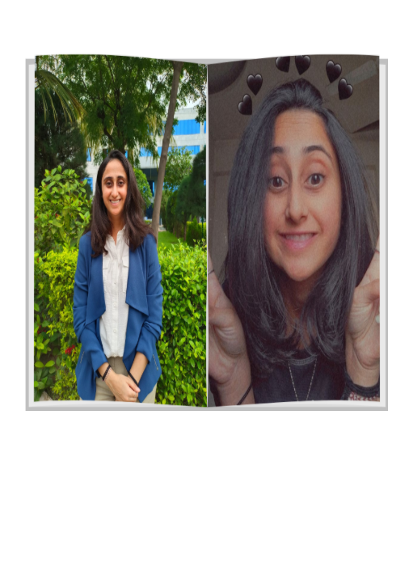

Get To Know More
About Me


Education
M.S. Computer Science
UNC Charlotte
👋 Hi, I’m Medha! I’m a Master’s student in Computer Science at UNC Charlotte, and I love teaching computers to see. Most of my work lives where AI meets the real world: real-time pose and hand tracking with MediaPipe and OpenCV, a browser game you play with your whole body, a virtual mouse you control with hand gestures, and an Android SDK that finds and straightens documents in a live camera feed.
Lately I’ve also been building with large language models, from hybrid retrieval (RAG) pipelines to multi-agent systems, and I care about measuring whether something actually works, not just whether the demo looks good. What excites me most is human–computer interaction: technology that understands how people move and makes interfaces feel natural.
On campus, I’m a Global Niner (Graduate Assistant) with the Center for Graduate Life and Learning, and a former Graduate Life Ambassador. As an international student myself, I especially enjoy helping fellow graduate students find their community and feel at home at UNC Charlotte.
Outside of code, you’ll usually find me reading or making something with my hands. Art and craft is where my creative side runs free, and that same curiosity shapes how I design and build.